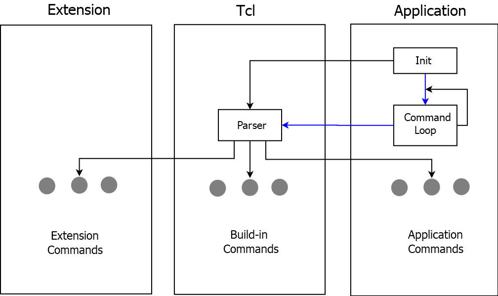

IC 为何偏恋三十而立的Tcl

本文经「原本」原创认证，访问yuanben.io查询【52HS9DF0】获取授权信息。
Tcl，发音做"tickle"，是Tool Command Language的首字母缩写。
有些编程语言单独看并没有优势，脱离开应用场景后甚至是一门即将被淘汰的语言，我认为Tcl就属于这种，本篇将探讨Tcl 没有被淘汰、被取代的原因。
2018，Tcl 诞生已有三十个年头，它依然做为IC设计的主力语言存在着，为什么IC偏偏恋上了Tcl，本文就Tcl这门语言的特点谈谈我对这个话题的看法，用开放的心态聊聊Tcl。
如果你希望了解更多程序语言发明大牛对Tcl 和其他一些程序有趣的论战，可以去搜索 “Tcl War”。
- 第一部分有一个Tcl 的小测验，看看你可以得几分，了解你和Tcl 的亲密度。
- 槽点：要不要评论回复下你的分数 :)
- 第二部分细数了Tcl 的优点和不足，快而立之年的Tcl 为何依然在IC星球发光发亮。
- 看点：了解Tcl 语言产生的背景、历史与演变，或许可以给我们一点启发，我们为什么还在用它。
- 第三部分会介绍一些我的经验，我心目中好IC Tcl程序的特点以及推荐两个好的实例。
- 看点：一点学习Tcl的体会，即使你厌恶编程，为了提高效率，为了绩效，为了工资，为了面试，你应该看一眼。
- 亮点：只用Tcl、Tk、Expect也可以创造一个自己的IC黑客帝国。
1. 测一测你对Tcl 的了解
如果不知道或者回答否则不得分，回答是或者知道得1分。6-8分及以上说明你对Tcl的了解还是不错的。
不管你得几分，不管你喜不喜欢Tcl - 这篇文章都可以给你一些故事和建议。
多家EDA 工具的Tcl Shell和Linux/Unix 上原生Tcl Shell，你（觉得）哪个好用？
- 你是否（熟练使用）下面全部的命令（1）？
- set
- puts
- array
- source
- if/switch
- for/foreach
- 你是否（熟练使用）下面全部的命令（2）？
- open/close
- file
- regexp/regsub
- proc
- clock
- 你是否（写过）procedure？
- 你（知道）2个以上Tcl 中作用域相关的命令吗？
- 你是否（用过）Pakcage，标准库的Package或者其他人写的Package？
- 你是否（写过）Package，并知道它如何被使用？
- 你（用过）dict 吗？
- 你（知道）namespace 和它的用法吗？
- 你（用过）interp 这个命令吗？
- 你（知道）Tcl 如何Trace 吗？
- 你（知道）有个TK 库Bwidget吗？
- 你是否（知道）如何获取http 数据？
- 你是否（用过）wait 和send 相关的命令？
- 你（编写）过C 语言功能并在tcl 中load 吗？
2. Tcl 的诞生历史
看点：了解Tcl 语言产生的背景、历史与演变，或许可以给我们一点启发，我们为什么还在用它。
Tcl/Tk 的发明人是伯克利大学的教授John Ousterhout，八十年代初，在教学过程中，他发现在集成电路CAD 设计中，很多时间都花在编程建立测试环境上。并且环境一旦发生了变化，就要重新修改代码以适应。这种费力而又低效的方法，迫使 Ousterhout 教授力图寻找一种新的编程语言，它即要有好的代码可重用性，又要简单易学，这样就促成了 Tcl (Tool Command Language) 语言的产生。
1994年Ousterhout教授被SUN招至麾下，加入了SUNLab，领导一个小组从事将 Tcl 移植到所有其它平台的工作，如 Windows 和 Macintosh。同时为 Tcl 增加了 Safe-Tcl 安全模块, 并为浏览器开发了 Tcl plug-in，以及支持 Java bytecode 的编译器、大字符集、新IO接口以及与Java的计算平台相连等。Tcl还有自己的浏览器。在面向对象程序设计占主导地位的今天，又开发了支持面向对象的 incr Tcl。为了鼓励各厂商开发第三方的程序，Tcl 的源代码可免费下载。所有这些努力使 Tcl 成为一个适应当代信息产业潮流的、支持多平台的、优秀的开发语言。
Ousterhout 教授于 1998 年初离开了 SUN，自立 Scriptics 公司，继续 Tcl/Tk 的研究和开发工作。
Tcl 最初的构想的是希望把编程做成基于组件的方式 (component approach)，即：与其为单个的应用程序编写成百上千行的程序代码，不如寻找一个种方法将程序分割成一个个小的、具备一定“完整”功能的、可重复使用的组件。这些小组件小到可以基本满足一些独立应用程序的需求，其它部分可在这些小组件的功能基础上生成。不同组件有不同功能，用于不同目的，并可为其它应用程序所调用。
当然, 这种语言还要有良好的扩展性, 以便用户为其增添新的功能模块。最后，需要用一种强的，灵活的“胶水”把这些组件“粘”合在一起, 使各个组件之间可互相“通信”，协同工作。程序设计有如拼图游戏一样，这种设计思想与后来的 Java 不谋而合。终于在 1988 年的春天, 这种强大灵活的胶水 - Tcl 语言被发明出来了。
按照Ousterhout 教授的定义，Tcl 是一种可嵌入的命令脚本化语言 (Command Script Language)。“可嵌入”是指把很多应用有效、无缝地集成在一起。“命令”是指每一条 Tcl 语句都可以理解成命令加参数的形式：

从图中可以了解到一个很重要的概念，输入到Tcl的所有交互指令或者其他接口都被认为是文本，按一定的顺序进行Parsing。 这个特性在某些应用场景变得很有用，命令也是数据（某些其他语言在命令和数据方面的互通性更好）。
EDA软件对Tcl的支持现在已经到了8.6，由于其扩展性好，调试简单，C接口友好，使用者学习成本低，这些都是商用软件的价值所在，更重要的是开源，免费。在IC设计流程中，有些文件格式是基于Tcl的，比如SDC。
| Date | Event |
|---|---|
| January 1990 | Tcl announced beyond Berkeley (Winter USENIX). |
| June 1990 | Expect announced (Summer USENIX). |
| January 1991 | First announcement of Tk (Winter USENIX). |
| June 1993 | First Tcl/Tk conference (Berkeley). [table] geometry manager (forerunner of [grid]), [incr Tcl], TclDP and Groupkit, announced there. |
| August 1997 | Tcl 8.0 introduced a bytecode compiler. |
| April 1999 | Tcl 8.1 introduces full Unicode support and advanced regular expressions. |
| August 1999 | Tcl 8.2 introduces Tcl Extension Architecture (TEA) |
| August 2000 | Tcl Core Team formed, moving Tcl to a more community-oriented development model. |
| September 2002 | Ninth Tcl/Tk conference (Vancouver). Announcement of starkit packaging system. Tcl 8.4.0 released. |
| December 2007 | Tcl 8.5 added new datatypes, a new extension repository, bignums, lambdas. |
| December 2012 | Tcl 8.6 added built-in dynamic object system, TclOO, and stackless evaluation. |
Tcl8.6是我们现在使用的版本，发布于2016年7月27号。
3. 三十而立的Tcl 为何依然光芒四射
看点：优点并不是任何场合都适用的，天天和IC、Tcl 打交道的你看看我对Tcl 优点的总结。
- 免费
免费，尤其是对商业免费是很重要的，企业对轮子的选择，如果不想自己造，那就要规避产品的法律风险，而免费开源（某些协议）首先消除了企业的这一顾虑，开源更是给了企业更大的自主权，可以利用整合的力量。免费开源对于个人工作中对工具或者学习材料的选择，就理性而言，是需要考虑风险、成本与产出的；任何人的时间和关系都是成本，企业更加关注成本这类关键字。
- 与C 的结合紧密
Tcl 是用C 语言开发的。它现在可运行在Unix，Windows 和Macintosh 等各种平台上。与C/C++ 的紧密结合，互相调用方便。高可用的商业软件很多使用C++ 开发，选择一种脚本语言做为高级语言的辅助工具很重要。从Tcl 中访问C 语言可以在外部为程序临时打补丁；相反，从C 语言中访问Tcl 可以将输入内容传递给内部功能。虽然在用户最终使用场景中，tcl与C你中有我，我中有你的配合不多。但在IC 具体设计调试、工具特性调试这些异常复杂多变的场景中，Tcl 为C提供了类似于在线调试的能力（在线意思为实时互相通信），这充分利用了编译语言的可靠性和脚本语言的灵活性。
- 开发部署周期短
脚本语言是解释性语言，不需要编译，这个特性保证了支持团队的实时反应。如果工程师在设计中遇到一个问题，发给支持团队，可能是EDA 公司，可能是公司内部的CAD 部门，他们需要重新编写一些功能，对代码进行编译、测试，然后再发给到出问题的工程师手里，如果还是不能解决问题，则需要继续迭代，效率会非常低；但如果使用脚本语言，不触及最核心的高级语言功能代码，只是对外部的东西进行处理，提供一个接口与内部进行沟通，而且脚本的测试和调试也快很多。总结来说就是开发和部署的周期大大缩短，非常适合IC 行业，IC 行业中的核心功能算法不需要快速迭代，AE 或者CAD 工程师面对的是如何将客户的数据或者输入格式调整到工具能够识别的最佳状态，去得到一个最优结果。
- TK 图形界面
Tk (Tool Kit) 是基于 Tcl 的图形程序开发工具箱, 是 Tcl 的重要扩展部分。Tk 隐含了许多 C/C++ 程序员需要了解的程序设计细节, 可快速地开发基于图形界面的程序。据称, 用 Tcl/Tk 开发一个简单的 GUI 应用程序只需几个小时, 比用 C/C++ 的效率要高十倍。需要指出的是这里所说的“窗口”是指 Tcl 定义的窗口，与 X-Windows 和 MS Windows 的定义不同，但它可完美地运行在以上两个系统上。
TK 几乎是各种脚本语言都支持的一种图形界面，它的Component binding 等思想到现在都是很好的方法。图形界面是和用户进行交流的一个重要工具，TK 做为一个快速模型，可以很简陋也可以很优雅。在最后一个部分，我将会看到几个TK 的著名程序，除了使用它们，阅读它们的源代码也会受益匪浅。
- 调试性语言
把Tcl 叫做调试性语言，是因为Tcl 做为一种粘合工具，很容易开发出一套访问核心数据的接口命令，比如EDA 工具的get以及report系列命令。获取信息后配合set_系列命令，快速调试环境，继而配置需要的内容。而Tcl 本身作为程序语言，虽然比不上Lisp 等语言完备，但是应用起来也不成问题，所以『简单』这个特性在自动化测试（Test）和调试（debug）中成了Tcl 的一个优势。
- 整合性语言
Tcl 和C 之间的便捷接口，让它拥有了强大的整合能力。撇开C 语言，用Tcl 做单纯的外部Wrapper 工具也十分便捷，这里指的是利用Tcl 将不同的可执行程序，或者不同语言的脚本整合到一起，Tcl 本身就是为这个而设计的，有一套处理异常的方法和完整的输入输出能力。我习惯给核心程序外加一层命令或者函数去判断其是否出错，对于按行执行的Tcl 来说，必须加一件外衣才能去catch 命令的错误。
- 入门简单，转移关注度
学习成本低，对于商业软件来说价值很大，对IC 工程师尤为重要。一个复杂的语言，学习成本高，迭代周期长会导致迭代成本高，不利于问题的分解，容易让工程师偏离IC 设计的主要矛盾 —— 设计本身的PPA。简单易用是Tcl 发明的最主要动力之一，对于大多数工程师，掌握第一个level的Tcl知识就已够用。
- 扩展性强（package 的优势）
Tcl 的Package 和其他程序语言的库都很像，Tcl 自身也提供了一套如何维护库的命令。Tcl 的库如果不涉及编译的话（比如需要访问数据库）是纯文本，可以说很简陋，当然也可以把这个扩展用得很高大上。由简单的思想建造出优雅很直接，而将一个复杂的结构简化成简单的思想却很难。
- 跨平台（Tcl 本身）
Tcl包括TK 这个界面程序，在保证功能一致性的情况下，无需编译便可以跨平台运行。
- 网络功能（Tcl 本身）
Tcl 通过http 包可以便捷地访问网络，大家可能有用python 或者其他语言做爬虫的经验，Tcl 也是可以的，但是如果用在IC 上，用在系统构建上，这个能力也是不可或缺的。
4. IC 工程师为何要熟悉Tcl 等脚本语言
看点：一点学习Tcl 的体会，即使你厌恶编程，为了提高效率，为了绩效，为了工资，为了面试，你应该看一眼。
前面我列出了十几个问题，涉及了Tcl 的不同方面，仅涉及对程序语言的熟悉，不涉及各种额外的编程思想。
我曾经对物理设计的职位做过词频统计，去除了一些语法词以后，Physical 出现频率最高，Tcl、Perl 的频率也排在前列。
- Tcl
- Lisp
- Scheme
- SKILL
- Perl
- Python
- Shell
这些Scripting Language 都有各自的背景，Tcl 已经说了很多了，其产生的原因就是为了解决和电路设计系统的交互问题。而像Perl，Python，用于处理报告和做数据挖掘、机器学习有它天生的优势。
Lisp 虽然复杂，虽然我也没用过，但是我了解它函数式的特性以及数据和命令的一致性很给力，很多模拟人用的SKILL或者SCHEME，都是Lisp 的子语言。
我们的工作就是和设计打交道，和工具打交道，脚本语言是设计系统、操作系统开放给我们的交流工具，我们还做不到让系统来理解人类语言，所以要去学习系统能懂的语言。
4.1. 如何学习
如果有编程基础，学习一门编程语言并不难。对于学习Tcl，我分为三个级别：
方法：挑一本Tcl 教程，结合实践从前往后走，就能掌握Level 1 到Level 3。到了Level 3 以后，就会有很多Tcl 脚本的积累。如何积累以及管理这些积累也是一个比较大的话题。
Level 1：和EDA 工具打交道
- 大概了解Tcl 是如何工作的，比如前面提到的，每个命令都是文本，都需要parsing。
- 会使用语言的基本命令，变量定义，条件语句，循环语句，异常处理等。
- EDA 工具的命令需要去多看，多用。
Level 2：实现一些复杂的功能
- 常用命令的基本用法和Tricky 的用法都要会。
- 会使用包，熟练使用文件处理和正则表达。
- 理解Tcl 运行的Level 和Domain。
Level 3：编写界面及复杂的应用
- 会用进程，以及程序间通信。
- 使用常用的包链接更多功能，如数据库。
- 制作TK 界面
每个级别并不是只有三个技能，限于篇幅这里只列举出比较典型的三个。
“有没有捷径可以走”，悄悄告诉你，“有，请往下再看两到三章”。
5. Tcl 家族：Tcl/Tk/Expect
看点：只用Tcl、Tk、Expect 也可以创造一个自己的IC 黑客帝国。
Expect 是Tcl 的一个扩展，或者说是Tcl 的另外一个可执行的分支，它的主要作用是用来粘合那些需要有互相交互的程序。
比如你登录某个项目需要输入密码；比如每次需要输入某个特定的项目名字，这些需要交互的内容可以用expect 来进行链接，普通的pipe 只解决输入输出的链接，对交互没有办法。
你是不是已经跃跃欲试了，从此可以解放很多冗余操作。
Tk有一个Bwidget 的Package，所有都是用标准的Tk 组件编写的一个扩展，好处在于方便修改，方便升级和维护。
Tcl 用来实现基本的逻辑功能、应用；Expect 用来解决自动化中的交互；Tk 用来编写界面。想造一个自己的系统用Tcl 系的程序语言就可以实现了。
通过学习Tcl/TK/Expect：
- 更好地与EDA 工具交互，扩展EDA 的命令集。
- 可以扩展EDA 的界面，虽然没有QT 那么华丽，但是基本功能都健全。
- 可以用Tcl 访问数据库（mysql，sqlite3，neo4j）。
- 可以用Tcl 编写各种逻辑功能，完成基本的算法。
- 更加自动化你的工作，提高效率。
- 访问网络，和Web 协同，数据通信，应用衔接。
- ...
6. 为什么Tcl 也可以做系统
- EDA 原生支持Tcl，可以有很好地交互和集成。
- 做为系统，界面是一个很重要的交互。
- Tcl 有丰富的接口，而且很容易扩展，接口方面和数据库的接口很齐全。
- 方便扩展EDA 功能，形成一套自由的体系。
- Tcl 的粘合剂作用可以方便的将不同的可执行程序拼接起来。
- Tcl 命令和数据基本可以混用，方便数据和命令在同一程序中混合。
- 基于上面一点，命令可以是字符串，是数据也是命令，方便应对各种场景。
- 逻辑层可以方便与数据层分开（软件设计思想方面，Tcl 可以应对当下的各种流行场景）。
- ...
7. Tcl 优势的几个实例推荐
有些常用的TK 工具，很好用的工具，同时它的源代码也值得一看。由于本章节更偏重实践，这里只做推荐。
7.1. tksqlite
sqlite IDE，这个是对sqlite 数据编写的一个很好的工具，是学习数据库访问和处理的一个很好的实例。
7.2. tkinspect
TK inspect tool，这个程序可以分析自己编写的TK 的各个namespace，各个component，这个tool 是Tk应用交互的一个很好的实例。
8. 文末思考题
Tcl 的好处我也鼓吹那么多了，现在如果你有一个私人Support 团队，CAD 团队为你服务，
你希望有一个什么最能解决你当前问题的Tcl 脚本或应用？大家可以留言讨论或者入群讨论。
这个假设是你有一个强大的Support 队伍，如果没有呢，你如何自己实现？
9. 参考内容
- Steve 笔记
- Steve 知乎ICCAD 专栏 https://zhuanlan.zhihu.com/iccad
- 《Tcl & the Tk Toolkit》
- 《Tcl/Tk : a developer’s guide》
- 《Practical Programming in Tcl and Tk》
- http://www.wikiwand.com/en/Scripting_language
- https://blog.csdn.net/larryliuqing/article/details/20902181
- http://scc.qibebt.cas.cn/docs/linux/script/TclTkall.pdf